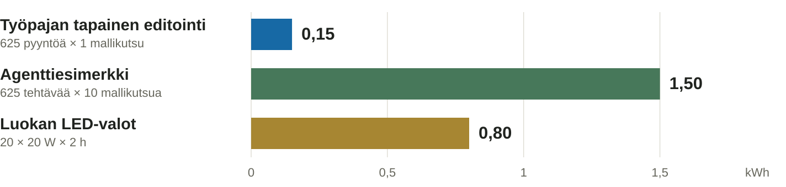

Varadia · havainnollistava laskelma
Sama pyyntömäärä. Eri työmäärä.
25 osallistujaa × 25 pyyntöä = 625 pyyntöä. Valaistus kahden tunnin ajan.

Oletukset: 0,24 Wh / mallikutsu molemmissa AI-esimerkeissä; agentille 10 kutsua / tehtävä.
Valot: 20 LED-valaisinta × 20 W × 2 h. Kaikki palkit ovat laskuesimerkkejä.
Työpajassa käytetään GPT-6-lunaa. Vertailukerroin on Geminin tekstipyynnön mediaani (2025),
ei työpajamme tai GPT-6-lunan mitattu kulutus.
Yksi nopea editti ja pitkä agenttitehtävä eivät ole sama työmäärä.
Työpajan toteutus puhujan mukaan: GPT-6-luna, pieni päättelypanos, yksi mallikutsu käyttäjän pyyntöä kohden, koodi kontekstina. Malli palauttaa tiedoston tai osan sen muutoksista. Ei autonomista monen työkalukutsun silmukkaa. Lyhyt “vaihda napin väri” -pyyntö ja koko tiedoston uudelleenkirjoitus voivat silti käyttää eri määriä tokeneita.
Kaavio on ehdollinen laskuesimerkki, ei kulutusarvio näistä tuotteista tai tästä luokasta. Google raportoi toukokuun 2025 Gemini Apps -tekstipyynnön mediaaniksi 0,24 Wh. Mediaani ei ole keskiarvo eikä kerro 625 todellisen kutsun summaa. Tässä se valitaan samaksi laskukertoimeksi jokaiselle kutsulle vain kutsumäärän vaikutuksen havainnollistamiseksi. Koodikonteksti, vastauspituus, malli ja päättely muuttavat kulutusta. Agentin 10 kutsua on valittu esimerkkimäärä, ei mitattu keskiarvo.
Laskut: 25 × 25 × 1 × 0,24 / 1000 = 0,15 kWh; 25 × 25 × 10 × 0,24 / 1000 = 1,50 kWh; 20 × 20 × 2 / 1000 = 0,80 kWh. 0,03 kWh tarkoittaisi 30 Wh per kutsu, ei 0,03 Wh. Muuta oletuksia lähdedatassa ja generoi kaavio uudelleen, jos saadaan mittaustietoa.
Googlen luku kattaa mallin palveluinfrastruktuuria ja datakeskuksen yleiskulutusta; ei koulutuksen tai laitteiden valmistuksen koko elinkaarta. Tässä ei lasketa osallistujien tietokoneita, luokan muuta sähköä, verkkoa eikä agentin työkalujen lisäkulutusta. Palkkeja ei pidä tulkita vaihtoehtoisiksi kokonaisjalanjäljiksi: luokan valot ja AI:n käyttö voivat kuluttaa yhtä aikaa. Sähkö ei yksin mittaa ilmasto- tai vesivaikutusta.
“Tämän laskun tarkoitus on tehdä yksiköt ja työmäärä näkyviksi, ei todistaa että energiasta ei tarvitse välittää.” Pieni yksittäinen käyttö ja suuri maailmanlaajuinen kulutus voivat olla yhtä aikaa totta. IEA: kokonaiskulutus ja käytön kasvu.